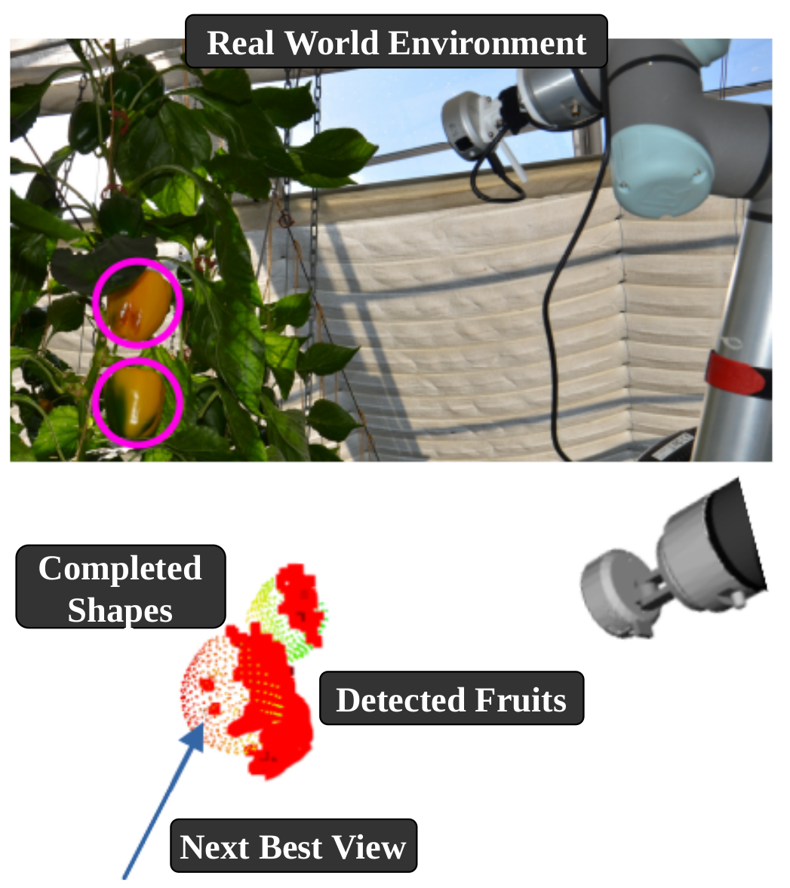
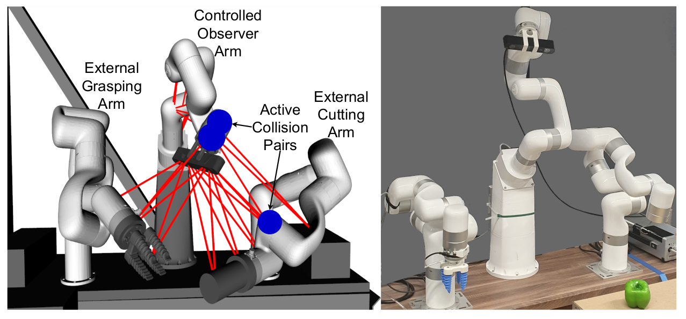

Perception under incomplete observations
Shape completion, uncertainty and persistent mapping.
My work studies how priors and partial observations can guide robotic perception, search and manipulation. The featured projects below state the problem, my contribution and the validated outcome separately.
Shape completion, uncertainty and persistent mapping.
Scene graphs, open-vocabulary object search and view planning.
Mobile manipulation, multi-arm systems and shared autonomy.

Problem. Dense crop canopies require a robot to identify which leaves obstruct a fruit from a chosen approach direction.
Contribution. I developed direction-conditioned scene-graph reasoning with a graph neural network that jointly infers plant-organ attachments and ranks occluding leaves.
Result. On a multi-plant synthetic pepper dataset, SG-DOR achieved occlusion F1 0.73, NDCG@3 0.85 and attachment edge F1 0.83.
Problem. Service robots must search for relocated or concealed objects when maps are incomplete and household habits change.
Contribution. I developed an open-vocabulary search framework that grounds LLM location priors in scene geometry and updates Dirichlet-Categorical beliefs and relocation patterns on dynamic scene graphs.
Result. Validated through real-robot object-search demonstrations with Stretch; simulation reached 72.67% success over 60-day dynamic scenarios.

Problem. A household robot must retrieve relocated, unmapped or concealed objects using an outdated environment map.
Contribution. I developed Stretch-Compose, combining spatial, semantic and geometric reasoning on a dynamic 3D scene graph with in-situ viewpoint planning for newly observed objects.
Result. Real-robot trials achieved 100% navigation and open-space detection; semantic-geometric reasoning reduced concealed-space search time by 68% compared with semantic reasoning alone.

Problem. A horticultural robot must perceive small occluded structures while moving safely through dense foliage.
Contribution. I developed an integrated pipeline for uncertainty-aware depth completion, persistent panoptic mapping, plant scene graphs and semantics-aware view-motion planning.
Result. The system achieved 55.27% semantic mIoU, 38.67% PQ and 40.62 mm depth RMSE on pepper data, while scene-graph hypotheses target unobserved pepper–peduncle attachments.
Problem. Selective harvesting requires coordinated perception and manipulation in dense, deformable plants.
Contribution. I co-developed the three-arm system, integrating active perception, online plant mapping and manipulation; I also designed and procured the mobile robot hardware.
Result. The full system performed autonomous pepper harvesting in real-robot laboratory experiments.

Problem. Fruit geometry is only partly visible from any single greenhouse view.
Contribution. I developed next-best-view planning that uses shape completion to target unseen fruit surfaces.
Result. Validated with a UR5e on real plants in a commercial greenhouse for fruit mapping and reconstruction.

Problem. Monocular semantic mapping needs depth and uncertainty estimates that remain meaningful beyond the training domain.
Contribution. I developed evidential multi-task depth and semantic prediction with uncertainty-aware 3D surface mapping.
Result. Evaluated on NYUv2 and in zero-shot ScanNet semantic mapping.

Problem. Heterogeneous robot arms need coordinated inverse kinematics without inter-arm collisions.
Contribution. I co-developed an optimization-based, decentralized collision-aware IK solver for multi-arm systems.
Result. Demonstrated coordinated motion on heterogeneous real and simulated robot configurations.